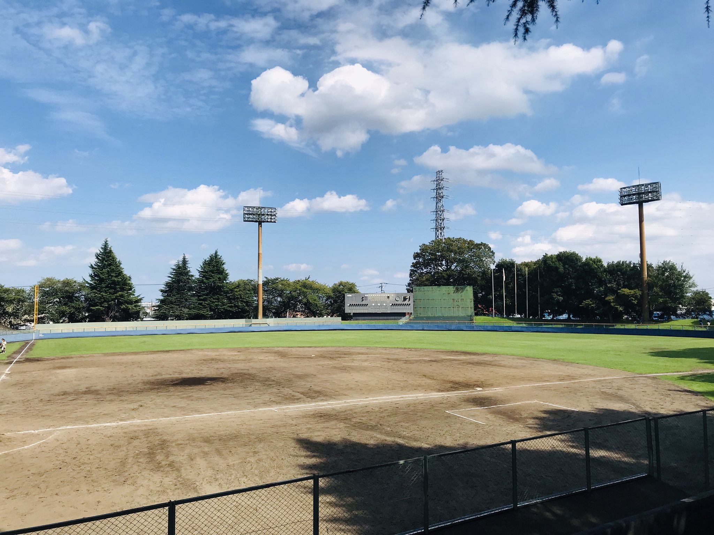
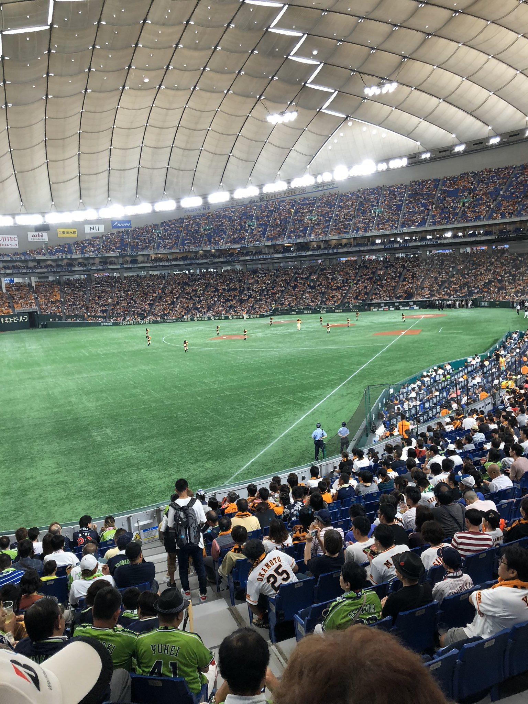

マイページ
プロフィール
- 伊藤 航大
- 年齢 21歳
- 出身地 埼玉県 志木市
- 所属大学 東洋大学
野球

高校時代までは野球をしていました。内野を守っていました！
最近は全く野球をやっていないので、久しぶりに野球がしたいです！！
これは高校時代、よく練習や試合をした球場の様子です。
趣味

筋トレが一番の趣味です。
またスポーツ観戦も好きで、特にプロ野球をよく見ます。
好きな球団は読売ジャイアンツです。好きな選手は亀井選手です。